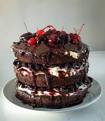

Lasagna
Home Page

Description
Black Forest cake is a layer cake made out of cocoa powder, cherries, Kirsch, and whipped cream, with dark chocolate as a decoration.
Ingredients
- 1 cup milk
- 1 tablespoon vinegar
- 1 ¾ cups all-purpose flour
- 2 cups white sugar
- ¾ cup unsweetened cocoa powder
- 1 teaspoon baking powder
- 2 teaspoons baking soda
- ½ teaspoon salt
- 2 eggs
- ½ cup vegetable oil
- 1 cup strong brewed coffee, cold
- 1 teaspoon vanilla extract
- 1 (21 ounce) can cherry pie filling1 (21 ounce) can cherry pie filling
- ½ cup cherry liqueur
Steps
- Preheat oven to 350 degrees F (175 degrees C). Grease and flour two 8 inch cake pans. Make sour milk by combining milk and vinegar. Set aside.
- Sift together the flour, sugar, cocoa powder, baking soda, baking powder and salt. Set aside. In a large bowl, whisk together the eggs, oil, coffee and vanilla. Stir in the sour milk. Gradually beat in the flour mixture, mixing just until incorporated.
- Pour batter into prepared pans. Bake in the preheated oven for 30 minutes, or until a toothpick inserted into the center of the cake comes out clean. Allow cake layers to cool completely before filling.
- To make the cherry filling: Combine the cherry pie filling and cherry liquor. Refrigerate cherry mixture until chilled, then fill cake.To make the cherry filling: Combine the cherry pie filling and cherry liquor. Refrigerate cherry mixture until chilled, then fill cake.